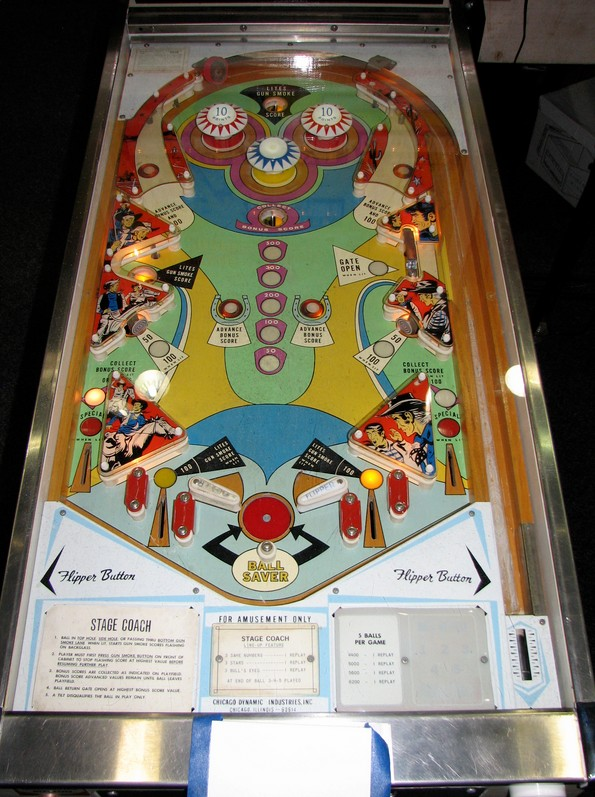

Stage Coach is the 4-player version. Gun Smoke is the 2-player version. With one exception, layout and scoring are the same between the two versions.
The Gun Smoke value starts by landing in the top saucer, left saucer, or going through the lit near out lane (which alternates on 10 point switch hits). When the Gun Smoke value is running, the lit point values on the backglass will cycle randomly between 50, 100, 200, 300, and 500 points. Press the Gun Smoke button on the front of the cabinet to stop the cycle. When the cycle is stopped, the lit score is awarded.
The Bonus value starts each ball at 50 points. The two center rollover buttons advance the bonus in the sequence 50-100-200-300-500. The rollover buttons in the orbits also advance the bonus, and additionally score 100 points. When the bonus is at exactly 100, the Ball Saver center post is raised, completely blocking the center flipper gap. When the bonus is at 300 or 500, the right gate is open, and a ball through the gate will end up in the shooter lane for a replunge. Using the gate does not close the gate. When the bonus is maxed at 500, the lower left and lower right standup targets are lit for 100 points instead of 50. The bonus is not collected by default when the ball drains; the only ways to collect the bonus are to shooter the center saucer or drain specifically down the lit far out lane. Only one far out lane is lit, and it alternates with every 10 point switch hit.
On Stage Coach only, there are 3 score reels on the backglass above the player scores with red symbols on them. Advancing the 1s, 10s, or 100s reel of your score moves the center, right, and left reels respectively. Each reel can show a 1, 2, 3, star, or bullseye. If you drain balls 3, 4, or 5 with the same symbol on all 3 reels, 1 replay is scored.
There are 2 out lanes on each side of the table bottom, with a slingshot between them. The near out lanes are directly behind the flipper hinges, making it impossible to trap a ball on a raised flipper. Near out lanes score 100 points or start Gun Smoke when lit, and alternate being lit based on 10 point switch hits. Far out lanes score 100 points or the Bonus value when lit and also alternate being lit based on 10 point switches. On the final ball of the game, the far out lanes are lit for Special intermittently based on switch hits as well. There is both a full center post and a center peg between the flippers. The post is only raised when the Bonus is exactly 100 points. Due to the inclusion of the Ball Saver center post, the peg is situated so far below the flippers that it is rarely meaningful.
There is no extra ball feature or traditional end of ball bonus. Tilt ends the ball in play only.
The below picture of Stage Coach's playfield was taken from the Internet Pinball Database, where it was originally provided by Jay Stafford.
